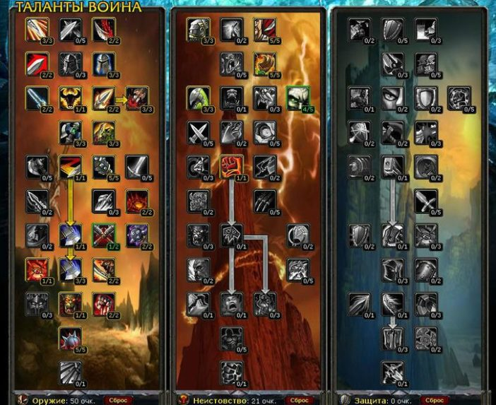

Гайд по Воину «Оружие» (Arms) в PVE WOW Lich King 3.3.5
Здравствуйте уважаемые любители такой игры как World of Warcraft. Сегодня я хочу вам рассказать о таком персонаже как Армс вар, потому как фурии вара я считаю довольно унылым и скучным персонажем для геймеров. Воины – это такой класс, который предназначен для ведения сражения только в тактике ближнего боя. Их главная особенность в том, что они имеют возможность наносить немалый урон, а также поглощать немало встречного урона. Так же воины имеют возможность носить очень мощную защиту в виде латной брони, первоклассные щиты и имеют неплохой набор способностей, которые делают воина практически неуязвимым.
У многих игроков сложилось мнение, что Армс вар для рейдов вообще не предназначен, и если вы хотите в рейдах выдавать топ ДПС, то армс вар вам «Не подходит». Однако, после того как БК ушло со сцены все вары начали танковать подземелья, а те кто остался ДПСить, бегали с двумя топорами. Поскольку процент игроков, которые имели, спек с двумя топорами, был критически мал, отсюда сложилось впечатление, что вар в армсе не только уныл, но и портит весь рейд своим присутствием. Так же сложилось впечатление что, армс спек – это ПвП, поэтому «спекайтесь в фури!!!».
1.Вар в армсе не имеет своего бафа, но может повесить баф как у роги.
2.Армс выдает гораздо меньше ДПС чем вар – фури. Причина тому – хаст и БЛ. Так как фурии вар получает от хаста прирост в ДПС, то для армса хаст почти никакой роли не играет.
3.Зачем вам «выпендриваться» и выжимать сложные кнопочные комбинации, когда можно бегать спокойно.
4.Дикий сбор аггро. Только очень странно, откуда оно собирается, если армс вар не дамажит.
5.Армс не может сбивать касты.
плюсы
Очень просто набирается кап АРП.
Нет необходимости вам собирать ненужный в армсе кап экспертизы.
Круто одеть армса намного проще, чем фури вара, так как армс не имеет зависимости от ап и силы в отличие от фури.
Весь процесс, когда вы наносите урон, доставляет много удовольствия, так как у фури весь процесс боя происходит путем унылого тыканья трех кнопок.
Огромное аггро, которое позволит вам в трудную минуту выручить танка в рейде при использовании такого аддона как Omen.
Минусы
Армс вар очень сильно зависит от арп.
Не простая ротация.
Отсутствует возможность сбить каст. При выборе расы не я вам не советую играть за людей или орков – позже я вам всё объясню.
1. Таланты
Билд 1.

Этот билд в основном заточен для походов в рейдовые подземелья. Здесь вместо таланта командирского голоса лучше вам вкачать улучшенную казнь или улучшенную стойку. Но учтите, в стойке будет + 2% к силе, но так же добавится экспертиза, что не очень хорошо. Так что выбирать только вам. Пять талантов вкачиваем в то оружие, с которым вы будете постоянно бегать. Дам вам маленькую подсказку: круче, чем Ваятель гробниц только ШМ, так как даст вам халявных + 15% к арп.
Билд 2.
Этот билд для вас явно будет проще. Он больше подходит для героиков, а так же для мест, где необходимо заливать большие кучи треша. Здесь для вас продуманы все удобства: включив «Вихрь», вы сможете выпить чашечку кофе, и снова включится в бой, раскидывая мобов в разные стороны.
2. Характеристики
1.Вам необходимо постараться набрать 90% АРП, так же боевая стойка вам даст еще 10%.
2.Имея 4 шмотки Т10 — 264, то не стоит отказываться от 2х Т9 – 245-258 так как это хорошо поднимет рейтинг пробивания брони и даст к меткости 8%.
3.Такой талант как мастерство, вам просто не нужен, поэтому полное его отсутствие на ваши боевые навыки никакого влияния оказывать не будет.
3. Способности
Кровопускание — этот дебафф в процессе боя должен всегда висеть на боссе, или на любой другой цели. Он постоянно дамажит с периодичностью в три секунды, поэтому на последних секундах постоянно его обновляйте. При этом не спешите и не опаздывайте иначе будете терять ДПС. Поможет вам в этом аддон Doom Cooldown Pulse, который так же можно скачать в разделе аддонов на нашем сайте. Так же не мешало бы обратить все внимание на отличные рейдовые аддоны.
Внезапная смерть — это прок у армс вара для такой способности как «Казнь». Позволяет хорошо ударить с прогрессирующей вероятностью, где то 3, 6, 9% все зависит от того, как вы прокачали свой талант. Так же после того как вы использовали «Казнь», у вас остается 10 единиц раги. В ротации способность «Казнь» занимает первое место. Всегда её нажимаем по проку.
Учитывайте тот момент, что когда совпадает откат «Смертельный удар» и прок «Внезапная смерть» — если есть у вас боле 40 единиц ярости, то сначала бьем морталом, а потом используем смертельную казнь. Все будет зависеть только от вашего опыта и накопленного вами количества гира. Если ваш шмот отлично регенерирует ярость, то особой разницы вы не почувствуете.
Вкус крови — Эта способность стоит на втором месте по приоритету. Можно юзать её не сразу. Эта способность имеет 6 секунд на внутренне КД и висит на противнике 9 секунд. Этот прок не имеет зависимости от прока «Превосходство», который постоянно прокается, когда босс или моб пытаются увернуться.
Смертельный удар — Это всё для армс вара. Если вы плохо одеты, то будете сливать ярость, если у вас хороший гир, то это одна из самых сильных ДПС абилок.
Мощный удар — нажимаем «Слив ярости» и «Удар с кастом». Во втором, его базовое использование длиться всего полторы секунды. Если вы взяли талант, то время использования сокращается до 0.5 секунды. Бьем в то время, когда у вас все остальные машки находятся на КД и у вас осталось более 40 единиц ярости. Если у вас оружие со скорость нанесения удар 3.4, то персонаж успевает ударить босса или моба два раза. После этого у персонажа должна проскочить авто – атака, после которой ваша ярость восстановится для того, чтобы вы смогли нанести следующий удар.
Удар героя — если у вас вкачен такой талант как «Пробуждение», то «Удар героя» становится вашей основной абилкой для того, чтобы постоянно сливать ярость. Используйте в том случае, если у вас ярость больше 70 единиц. Так же «Удар героя» можно использовать на боссах вместо мощного удара при постоянных пробежках в то или иное место.
Казнь — Если у босса осталось всего 20% жизней, то эта абилка превращается в новую способность для того, чтобы сливать ярость. Вначале вешаем «Кровопускание» и постоянно его необходимо поддерживать в процессе боя, потом прокайте «Казнь» и после «Превосходство», потом «Смертельный удар», но теперь не обращаем внимания на «Слем» и «Удар героя» и постоянно прокаем «Казнь». Так же, не забывайте постоянно контролировать вашу ярость.
Вихрь клинков — в основном он используется сразу после пула, для того чтобы потом начать выполнять основную ротацию. Для того, чтобы вы смогли набить дебафф от кровопускания, «Вихрь клинков» используйте в пачках мобов на треше, где постоянно превалирует АоЕ урон размашистых движений.
Удар грома — как я уж вам говорил, в если в билде есть «Пробуждение» и «Улучшенный удар грома», то она становится как АоЕ абилка с превосходным дамагом.
Размашистые удары — используем на боссах в том случае, когда в бою присутствуют 2 или боле целей.
Сокрушительный бросок — про эту способность многие Армс вары просто напросто забывают, а очень зря. Она способна повышать ДПС не только личный, но и всего рейда в целом. Имеет КД 5 минут. Если бой будет коротким, то используйте эту абилку в экзекут-фазе, если бой будет идти более 5 минут, то прокаем её во время пула и второй раз в экзекут-фазе.
Героический бросок — когда вы постоянно приходится отходить от босса или противника, то «Героический бросок» помогает постоянно поддерживать на мобе Кровопускание. Многие геймеры так же часто забывают про данную абилку.
4. Ротация
Ротации у вара армса как такой нет. Весь процесс заключается в ожидании проков и молитвы «Да не спадут глубокие раны». Но, если по короче, то всё дело обстоит примерно так: используем всегда мортал страйк, если у вас есть много раги; всегда должно на противнике висеть кровопускание; если у вас отсутствует ярость, используйте бладжрейдж; если у вас на всех машках висит КД, и ничего уже нет возможности прокнуть, только тогда используйте Слэм; чтобы вам избавиться от большого переизбытка ярости, используйте удар героя; если у вас вкачен второй билд, то используйте вихрь всегда по КД.
5. Символы
Большие:
Символ смертельного удара — дамаг от мортала на 10%. тут без комментов
Символ удара героя — при крите от «Удар героя» вы мгновенно накапливаете 10 ед. ярости
Символ кровопускания — время Кровопускание» + 6 с. реже вешаем, экономим ГДК — профит увеличение дпс
Символ казни — отлично для экзекут фазы. Казнь наносит дамаг как при + 10 раги.
Символ размашистого удара — Отлично когда от вас требуется аое дамаг
Малые:
Символ боевого крика — Увеличивает время действия эффекта способности «Боевой крик» на 2 мин.
Символ властности — Увеличивает время действия способности «Командирский крик» на 2 мин.
Символ кровавой ярости — Уменьшает количество здоровья, затрачиваемого на применение способности «Кровавая ярость» на 100%.
6. Чары
Голова — Магический знак страданий
Плечи — Великое начертание секиры
Спина — Свиток чар для плаща – ловкость V
Грудь — Свиток чар для нагрудника – все характеристики VII
Запястья — Свиток чар для наручей – штурм II
Перчи — Чары для перчаток – крушитель
Пояс — Извечная поясная пряжка
Штаны — Накладки для поножей из ледяной чешуи
Ступни — Чары для обуви – штурм II
Оружие — Чары для оружия – берсерк
7. Камни
Мета сокеты — Хаотический алмаз небесного сияния — +21 к рейтингу критического удара и +3% к критическому урону. Алмаз жестокого землеправителя — будет лучше (с слезы и меты мы получаем в сумме 31 ловкости, что при баффах даст крита больше, чем дает мета на крит)
Синий — Слеза кошмара
Красный — Растрескавшийся багровый +20 к пробивание брони, Рельефный багровый рубин +20 к силе, Покрытый письменами аметрин +10к силе +10 к криту, Гравированный аметрин +10 к силе +10 к рейт. меткости
Желтый — Покрытый письменами аметрин +10 к силе + 10 к криту, Гравированный аметрин +10 к силе +10 к рейт. меткости
8. Bis лист
Голова-Освященный полный шлем имирьярского повелителя